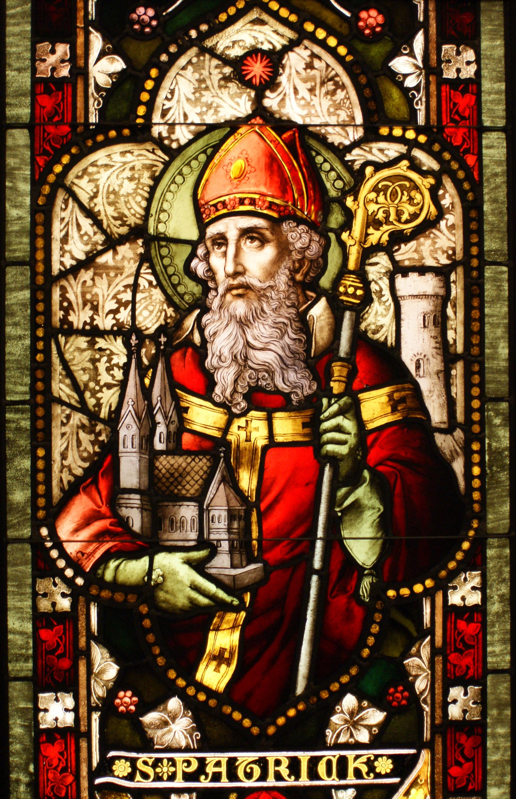

 «Sia la strada al tuo fianco, il vento sempre alle tue spalle, che il sole splenda caldo sul tuo viso, e la pioggia cada dolce nei campi attorno e, finché non ci incontreremo di nuovo, Iddio ti protegga nel palmo della sua mano»
(San Patrizio, Benedizione del viaggiatore irlandese)
Patrizio d'Irlanda, nato con il nome di Maewyin Succat, scelse successivamente il nome latino di Patrizio (Bannaventa Berniae, 385 – Saul, 17 marzo 461), fu un vescovo e missionario irlandese di origini scozzesi. Assieme a San Columba di Iona ed a Santa Brigida d'Irlanda è il patrono dell'Irlanda. Era figlio di Calphurnius e Conchessa, appartenenti ad una famiglia nobile romana. Viene festeggiato da tutta la comunità irlandese del mondo il 17 marzo, data della sua morte.
Rapito quando aveva 16 anni da pirati irlandesi, fu venduto come schiavo al re del North Dal Riada, nell'odierna Irlanda del Nord. Qui apprese la lingua gaelica e la religione celtica. Dopo sei anni fuggì dalla corte del re per tornare alla sua famiglia. Ritornò alla Chiesa cristiana, come già suo padre e suo nonno prima di lui, divenendo diacono. Recatosi in Gallia, Saint Germain d'Auxerre lo consacrò vescovo.Successivamente gli fu affidata da papa Celestino I l'evangelizzazione delle isole britanniche e specialmente dell'Irlanda. Nel 431-432 iniziò il suo apostolato in terre irlandesi, all'epoca quasi interamente pagane. A lui si deve la fioritura del Cristianesimo in Irlanda, seppur in forma sincretica con il Paganesimo celtico. Nacque infatti la corrente separata del Cristianesimo celtico, in seguito limitato e riassimilato dalla Chiesa cristiana. Infatti, per conservare le radici e le tradizioni storiche del popolo irlandese, nonché per un suo attaccamento alla religione celtica, Patrizio favorì la combinazione di molti elementi cristiani e pagani. Per esempio introdusse il simbolo della croce solare sulla croce latina, facendo diventare la croce celtica il simbolo del Cristianesimo celtico. All'età di oltre cinquant'anni intraprese un lungo pellegrinaggio fino a Roma. Al ritorno si stabilì nell'Irlanda del Nord fino al termine dei suoi giorni. Fonti storiche accertano la sua morte a Downpatrick, in Irlanda, ma alcuni studiosi suppongono che la sua morte possa essere avvenuta in Inghilterra o in Galles.Gli sono attribuite due lettere in latino: la Confessio (o "Dichiarazione" in cui offre un breve resoconto della sua vita e della sua missione) e l'Epistula, una lettera rivolta ai soldati di Coroticus.
Secondo la tradizione irlandese, in Irlanda non ci sarebbero più serpenti da quando San Patrizio li cacciò in mare.
Questa leggenda è connessa a quella della montagna sacra irlandese, Croagh Patrick, sulla quale il santo avrebbe trascorso
quaranta giorni, gettando alla fine una campana dalla sommità del monte nell'attuale Baia di Clew per scacciare i serpenti
e le impurità, formando le isole che la contraddistinguono.
Celebre anche la leggenda del pozzo di San Patrizio, il pozzo
senza fondo, da cui si aprivano le porte del Purgatorio. Da notare la presenza della leggendaria figura di San Patrizio
anche nell'emblema nazionale irlandese, il trifoglio (shamrock ).
Grazie ad un trifoglio, si racconta infatti, San Patrizio
avrebbe spiegato agli irlandesi il concetto cristiano della Trinità, sfogliando le tre piccole foglie legate ad un unico stelo.
).
Grazie ad un trifoglio, si racconta infatti, San Patrizio
avrebbe spiegato agli irlandesi il concetto cristiano della Trinità, sfogliando le tre piccole foglie legate ad un unico stelo.

{kind=link}
{kind=link}
{kind=link}